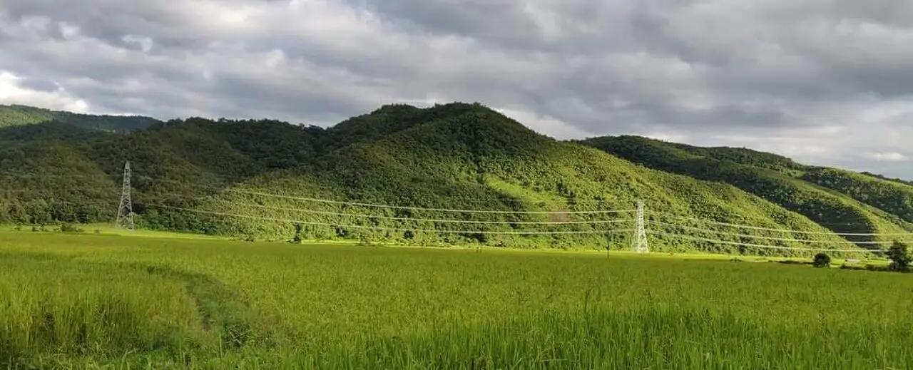

10 stories, each with its photo, the official position and its sources.

File photo · 2021 · Paddy fields and hills around Kalapahar, Kangpokpi district, in 2021. File photo of the district. Photo: Sunil Chhetry / Wikimedia Commons, CC BY-SA 4.0 (cropped (watermark removed))
AssemblyKangpokpi district and Imphal, Manipur
Six Naga men buried after 187 days
Families buried six Liangmai Naga men in Kangpokpi on 16 Nov, 187 days after their abduction, after official assurances of justice. Police fired tear gas at shutdown supporters in Imphal; no injuries reported.
Right upheldBijna village, Karnal district, Haryana
Six police suspended over Karnal custody death
Jitender Rana, 32, died in CIA-2 custody after police took him from home on 13 Nov, his family says. A DSP confirmed six police were suspended and booked for murder; no arrests reported.
AssemblyHyderabad and Adilabad district, Telangana
Student leaders held overnight before Israeli tech event
Police detained two SIO student leaders in Hyderabad on 15 Nov, and an activist in Adilabad, before T-Hub hosted 20 Israeli firms. Police called it preventive arrest; the two were freed after about seven hours.
Court: hear citizenship claim before any deportation
The Karnataka High Court barred deporting Abdul Rahim, held at a Bengaluru centre under a 5 March order, until his claim of Indian citizenship is fairly heard. Authorities say his documents are fraudulent.
Lives lostAbu Qalb, Abu Zabad locality, West Kordofan, Sudan
Strike on Abu Qalb kills up to 15
A strike on Abu Qalb, West Kordofan, on 15 Nov killed 13 to 15 civilians, including four children, rights groups say. An army-allied spokesman said his forces hit RSF positions in the area.
File photo · 2025 · The public services centre in Komyshuvakha, Zaporizhzhia region, in 2025. File photo. Photo: Вадим Балачук / Wikimedia Commons, CC0 (resized)
Search work has ended at the Komyshuvakha school-turned-aid centre, hit by aerial bombs on 2 Nov; 72 people died, Ukraine's interior minister said, up from 55. Russia says it targeted military units.
A Bahraini court sentenced 64 Shias, 57 of them clerics, to life on terror charges on 16 Nov, and five others to 15 years, a rights group says. Authorities deny targeting citizens by religion.
File photo · 2024 · A street in an industrial area of Kigali, Rwanda, in 2024. File photo of the city. Photo: Rachelboo2 / Wikimedia Commons, CC0 (resized)
DetentionKigali, Rwanda (plan by five EU states)
Five EU states plan Rwanda deportation centre
Germany, Austria, the Netherlands, Denmark and Greece plan to send rejected asylum seekers to Rwanda, about 100 at first, from next year. 47 groups urged them to drop it; Rwanda promises independent monitoring.
File photo · 2015 · An Israeli checkpoint at Tel Rumeida in Hebron, in 2015. File photo; the Guardian report does not say where the photos were taken. Photo: Makbula Nassar / Wikimedia Commons, CC BY-SA 4.0 (cropped)
PrivacyGaza and the West Bank
Israeli military ran Palestinian photos through Amazon tool
Israel's military uploaded 3.5 million photos to Amazon's cloud in early 2024 to use its facial recognition on Palestinians, leaked documents show, the Guardian reports. The military declined to comment; AWS cites customer privacy.
Life & safetyKharaz refugee camp, Lahj governorate, Yemen
Fighting reaches Yemen's Kharaz refugee camp
UNHCR says clashes have reached Kharaz camp in Lahj, putting some 9,600 refugees at risk, and hundreds of refugee families have fled the fighting. It urged all parties to respect the camp's civilian character.